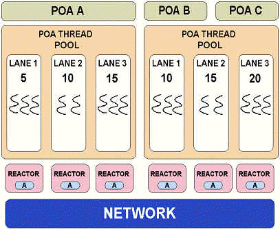
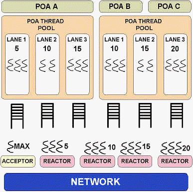

This page describes and compares the two main ORB designs we considered for supporting Real-Time CORBA 1.0 in TAO. The first design, codenamed reactor-per-lane and shown in Figure 1, was chosen for our initial implementation. The second design, queue-per-lane, might also get implemented in the future, as a part of a project evaluating alternative ORB architectures for Real-Time CORBA.
orb->run ().

Figure 1: Reactor-per-lane
When a Real-Time POA is creating an IOR, it includes one or more of its
threadpool's acceptor endpoints into that IOR according to the following
rules. If the POA's priority model is server declared, we use the
acceptor from the lane whose priority is equal to the priority of the target
object. If the
priority model is client propagated, all endpoints from the POA's
threadpool are included into the IOR. Finally, if the PriorityBandedConnectionPolicy
is set, then endpoints from the threadpool lanes with priorities falling into one of the specified
priority bands are selected. The endpoints, selected according to the
rules above, and their corresponding priorities are stored in IORs using a special
TaggedComponent TAO_TAG_ENDPOINTS. During each
invocation, to obtain a connection to the server, the client-side ORB selects
one of these endpoints based on the effective policies. For example, if the object has
client propagated priority
model, the ORB selects the endpoint whose priority is equal to the priority of the client thread making the
invocation. If on the client-side, during invocation, or on the
server-side, during IOR creation, an endpoint of the right priority is not available, it
means the system has not been configured properly, and the ORB throws an exception.
The design and rules described above ensure that when a threadpool with lanes is
used, client requests are processed by the thread of desired priority from very
beginning, and priority inversions are minimized.
Some applications need less rigid, more dynamic environment. They do not have the advanced knowledge or cannot afford the cost of configuring all of the resources ahead of time, and have a greater tolerance for priority inversions. For such applications, threadpools without lanes are a way to go. In TAO, threadpools without lanes have different semantics that their with-lanes counterparts. Pools without lanes have a single acceptor endpoint used in all IORs, and their threads change priorities on the fly, as necessary, to service all types of requests.

Figure 2: Queue-per-lane
Global acceptor is listening for connections from clients. Once a connection is established, it is moved to the appropriate reactor during the first request, once its priority is known. Threads in each lane are blocked on condition variable, waiting for requests to show up in their queue. I/O threads read incoming requests, determine their target POA and its threadpool, and deposit the requests into the right queue for processing.
Queue-per-lane advantages:
Last modified: $Date$